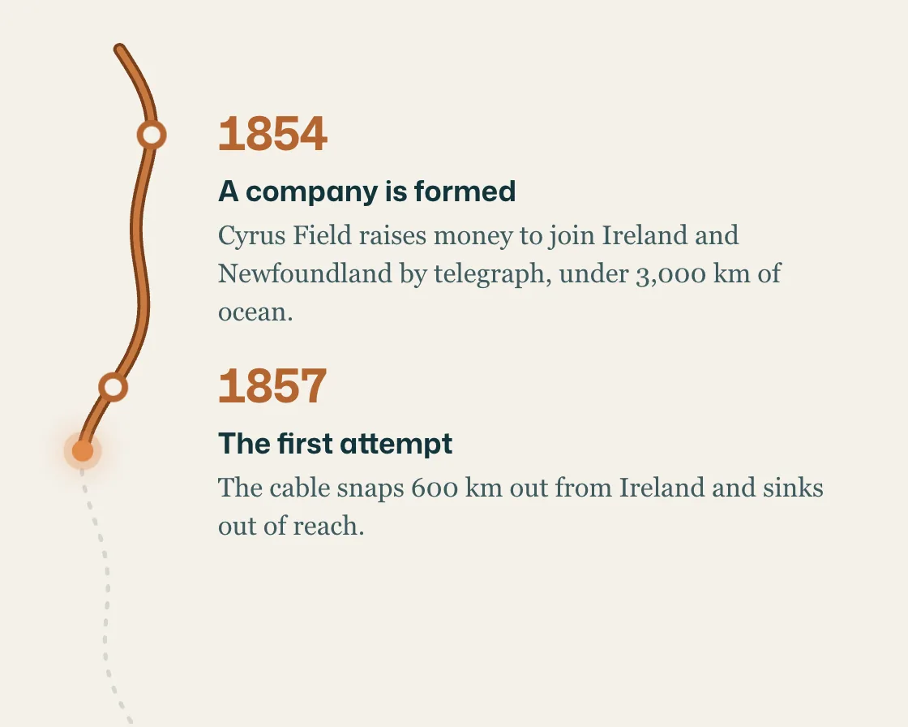

Timeline draw
Timeline draw is a DOM effect: a scroll-scrubbed line draws down; milestones trigger as it passes. One plain JavaScript file with no dependencies; add it with npx motion-library add timeline-draw.

Open it live, tune it and copy the code
What is Timeline draw?
A copper telegraph line draws down the page as you scroll, and each year pops in on arrival.
How does Timeline draw work?
The line is scrubbed by a clip-path edge pinned to a fixed reading line in the viewport, with a glowing tip; milestones are triggered instead, easing in once.
How do I add Timeline draw to my website?
- In your project folder, run
npx motion-library add timeline-draw. It writesanimations/timeline-draw.js. Needs Node 18 or newer. - Import it and call it with a container element that has a size:
import fx from './animations/timeline-draw.js'; const stop = fx(document.querySelector('#hero')); - Call
stop()to clean up, for example when a component unmounts.
Every setting below is also a flag, so you can install it already tuned: npx motion-library add timeline-draw --line 0.9.
What settings can I tweak?
| Setting | Flag | Default | Range | Step |
|---|---|---|---|---|
| Reading line | --line | 0.62 | 0.3 to 0.9 | 0.01 |
| Pop (ms) | --pop | 300 | 120 to 800 | 10 |
Specifications
- Renderer
- DOM (CSS and the Web Animations API)
- Category
- Scroll
- Dependencies
- None
- File size
- 8.7 KB, unminified
- Interactive
- Yes: it follows scrolling
- Reduced motion
- Respects prefers-reduced-motion
- Licence
- MIT-0: use it anywhere, no credit needed
Source code
// Timeline draw, on a history article about the first transatlantic telegraph cable: a copper line lays itself down the page as you scroll, like the cable paying out over the seabed, and each year pops in as the line reaches it.
// The line is scrubbed: a clip edge follows a fixed reading line in the viewport, so the drawing always stops exactly where your eyes are, and goes back up if you scroll back. The milestones are triggered instead (they ease in once, and out if you return), because text should arrive whole, not half-faded.
const PARAMS = { line: 0.62, pop: 300 };
export default function (stage) {
const reduce = matchMedia('(prefers-reduced-motion: reduce)').matches;
const AH = 340, MINW = 400, STEP = 118, X0 = 46;
const events = [
['1854', 'A company is formed', 'Cyrus Field raises money to join Ireland and Newfoundland by telegraph, under 3,000 km of ocean.'],
['1857', 'The first attempt', 'The cable snaps 600 km out from Ireland and sinks out of reach.'],
['1858', 'Ninety-eight words', 'Queen Victoria’s message to President Buchanan takes sixteen hours to send. The cable dies three weeks later.'],
['1865', 'The largest ship afloat', 'The Great Eastern pays out a thicker cable, until it breaks with 1,000 km to go.'],
['1866', 'It holds', 'A new cable lands in Heart’s Content. Weeks later the lost one is hooked from the seabed and finished too.'],
];
const H = events.length * STEP + 40;
const xAt = y => X0 + 14 * Math.sin(y / 46) + 6 * Math.sin(y / 17);
let d = ''; for (let y = 0; y <= H; y += 4) d += `${y ? 'L' : 'M'}${xAt(y).toFixed(1)} ${y}`;
const root = document.createElement('div');
root.className = 'td-root';
root.innerHTML = `<style>
.td-root { position: absolute; inset: 0; overflow: hidden; background: #f4f1ea; color: #12343b; font-family: "Mona Sans", system-ui, -apple-system, sans-serif; }
.td-art { position: absolute; left: 0; top: 0; height: ${AH}px; transform-origin: 0 0; }
.td-scroll { position: absolute; inset: 0; overflow-y: auto; overflow-x: hidden; scrollbar-width: none; }
.td-scroll::-webkit-scrollbar { display: none; }
.td-head { padding: 26px 26px 16px; max-width: 520px; }
.td-head small { font-size: 10.5px; font-weight: 700; letter-spacing: .12em; color: #b4652f; }
.td-head h1 { margin: 8px 0 8px; font: 600 31px/1.04 ui-serif, "Iowan Old Style", Georgia, serif; letter-spacing: -0.02em; }
.td-head p { margin: 0; font: italic 400 13.5px/1.45 ui-serif, Georgia, serif; color: #3f5b60; }
.td-head span { display: block; margin-top: 10px; font-size: 11px; color: #6b7f82; }
.td-line { position: relative; height: ${H}px; margin: 10px 0 0 10px; }
.td-line svg { position: absolute; left: 0; top: 0; width: 100px; height: ${H}px; overflow: visible; }
.td-ink { will-change: clip-path; }
.td-tip { position: absolute; left: 0; top: 0; width: 10px; height: 10px; margin: -5px; border-radius: 50%; background: #e0894a; box-shadow: 0 0 0 4px rgba(224,137,74,.25), 0 0 14px 4px rgba(224,137,74,.45); will-change: transform; }
.td-ev { position: absolute; left: 0; right: 24px; height: ${STEP}px; }
.td-dot { position: absolute; width: 14px; height: 14px; margin: -7px; border-radius: 50%; background: #f4f1ea; border: 3px solid #b4652f; box-sizing: border-box; opacity: 0; }
.td-ring { position: absolute; width: 14px; height: 14px; margin: -7px; border-radius: 50%; border: 2px solid #b4652f; box-sizing: border-box; opacity: 0; }
.td-card { position: absolute; left: 92px; right: 0; top: -12px; opacity: 0; }
.td-card b { font: 700 22px/1 "Mona Sans", system-ui, sans-serif; letter-spacing: -0.02em; color: #b4652f; font-variant-numeric: tabular-nums; }
.td-card h3 { margin: 4px 0 3px; font-size: 13.5px; font-weight: 680; }
.td-card p { margin: 0; max-width: 380px; font: 400 12.5px/1.45 ui-serif, Georgia, serif; color: #3f5b60; }
.td-end { padding: 10px 26px 120px 102px; font: italic 400 13px/1.5 ui-serif, Georgia, serif; color: #3f5b60; }
</style>
<div class="td-art"><div class="td-scroll">
<div class="td-head"><small>HISTORY · TELEGRAPHY</small><h1>The cable that crossed the Atlantic</h1><p>Twelve years, five attempts and one very large ship. How two continents first talked in minutes instead of weeks.</p><span>By Ruth Adeyemi · 15 min read</span></div>
<div class="td-line">
<svg viewBox="0 0 100 ${H}" aria-hidden="true"><path d="${d}" fill="none" stroke="#12343b" stroke-opacity=".14" stroke-width="2" stroke-dasharray="2 6" stroke-linecap="round"/><g class="td-ink"><path d="${d}" fill="none" stroke="#7a3f1a" stroke-width="6" stroke-linecap="round"/><path d="${d}" fill="none" stroke="#c97a40" stroke-width="3" stroke-linecap="round"/></g></svg>
${events.map(([y, h, p], i) => `<div class="td-ev" style="top:${40 + i * STEP}px"><i class="td-ring" style="left:${xAt(40 + i * STEP).toFixed(1)}px"></i><i class="td-dot" style="left:${xAt(40 + i * STEP).toFixed(1)}px"></i><div class="td-card"><b>${y}</b><h3>${h}</h3><p>${p}</p></div></div>`).join('')}
<i class="td-tip"></i>
</div>
<div class="td-end">From then on, news crossed the ocean faster than the ships that used to carry it.</div>
</div></div>`;
stage.append(root);
const box = root.querySelector('.td-art'), sc = root.querySelector('.td-scroll'), line = root.querySelector('.td-line');
const ink = root.querySelector('.td-ink'), tip = root.querySelector('.td-tip');
const evs = [...root.querySelectorAll('.td-ev')].map(el => ({ dot: el.querySelector('.td-dot'), ring: el.querySelector('.td-ring'), card: el.querySelector('.td-card'), on: false }));
const fit = () => {
const W = stage.clientWidth, Hh = stage.clientHeight, s = Math.min(Hh / AH, W / MINW) || 1;
box.style.width = W / s + 'px'; box.style.top = (Hh - AH * s) / 2 + 'px'; box.style.transform = `scale(${s})`;
};
const ro = new ResizeObserver(fit); ro.observe(stage); fit();
// Simulated reader: down the timeline one year at a time, a pause on each, then back to the top.
const T = () => line.offsetTop, end = () => sc.scrollHeight - sc.clientHeight;
const at = i => () => Math.min(end(), T() + 40 + i * STEP - AH * PARAMS.line + 30);
const stops = [[() => 0, 0, 1100], ...events.map((_, i) => [at(i), i ? 900 : 1100, 900]), [end, 900, 1200], [() => 0, 1700, 300]];
const ease = t => t < 0.5 ? 4 * t * t * t : 1 - Math.pow(-2 * t + 2, 3) / 2;
let seg = null, si = 0, userUntil = 0, raf;
const take = () => { userUntil = performance.now() + 3000; seg = null; };
['wheel', 'touchstart', 'pointerdown'].forEach(e => sc.addEventListener(e, take, { passive: true }));
function drive(now) {
if (now < userUntil) return;
if (!seg) { const [to, dur, hold] = stops[si++ % stops.length]; seg = { from: sc.scrollTop, to: Math.max(0, to()), t0: now, dur, hold }; }
const k = seg.dur ? Math.min(1, (now - seg.t0) / seg.dur) : 1;
sc.scrollTop = seg.from + (seg.to - seg.from) * ease(k);
if (now - seg.t0 >= seg.dur + seg.hold) seg = null;
}
const easeOut = 'cubic-bezier(0.23, 1, 0.32, 1)';
// reduced motion: milestones fade in place; no pop, no ripple ring, no slide
const still = k => reduce ? k.map(({ transform, ...f }) => f) : k;
function toggle(e, on) {
e.on = on;
const o = { duration: PARAMS.pop, easing: easeOut, fill: 'forwards' };
if (on) {
e.dot.animate(still([{ opacity: 0, transform: 'scale(0.95)' }, { opacity: 1, transform: 'scale(1.25)', offset: 0.45 }, { opacity: 1, transform: 'scale(1)' }]), o);
if (!reduce) e.ring.animate([{ opacity: 0.8, transform: 'scale(1)' }, { opacity: 0, transform: 'scale(2.6)' }], { ...o, duration: PARAMS.pop * 2.4 });
e.card.animate(still([{ opacity: 0, transform: 'translateX(10px)' }, { opacity: 1, transform: 'none' }]), { ...o, delay: 60 });
} else {
e.dot.animate([{ opacity: 1 }, { opacity: 0 }], { ...o, duration: PARAMS.pop * 0.6 });
e.card.animate(still([{ opacity: 1, transform: 'none' }, { opacity: 0, transform: 'translateX(6px)' }]), { ...o, duration: PARAMS.pop * 0.6 });
}
}
function frame(now) {
drive(now);
// the reading line sits at a fixed height in the viewport; the cable is drawn down to it
const y = Math.max(0, Math.min(H, sc.scrollTop + AH * PARAMS.line - T()));
ink.style.clipPath = `inset(0 -20px ${(H - y).toFixed(1)}px -20px)`;
tip.style.transform = `translate(${xAt(y).toFixed(1)}px, ${y.toFixed(1)}px)`;
tip.style.opacity = y > 2 && y < H - 2 ? 1 : 0;
evs.forEach((e, i) => { const on = y >= 40 + i * STEP; if (on !== e.on) toggle(e, on); });
raf = requestAnimationFrame(frame);
}
raf = requestAnimationFrame(frame);
return () => { cancelAnimationFrame(raf); ro.disconnect(); root.getAnimations({ subtree: true }).forEach(a => a.cancel()); root.remove(); };
}